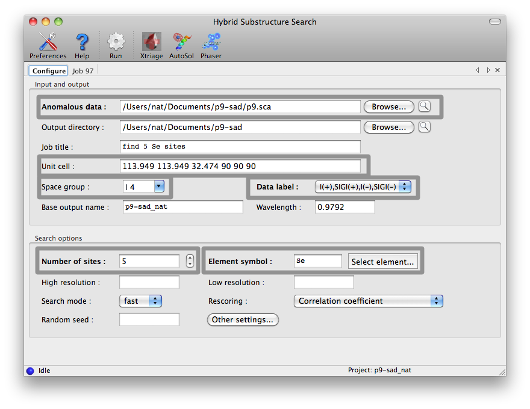
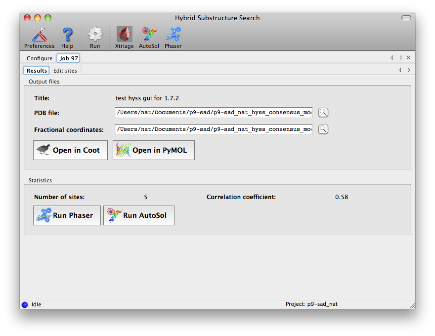
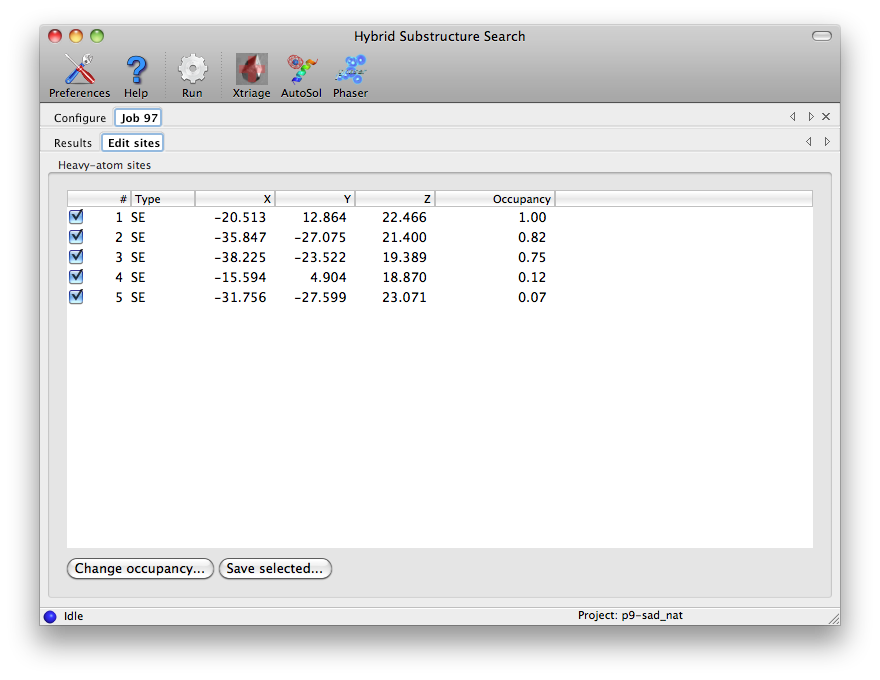

Hybrid Substructure Search
Ralf Grosse-Kunstleve, Paul Adams, Randy Read, Gabor Bunkoczi, Tom Terwilliger
The HySS (Hybrid Substructure Search) submodule of the Phenix package
is a highly-automated procedure for the location of anomalous
scatterers in macromolecular structures. HySS starts with the
automatic detection of the reflection file format and analyses all
available datasets in a given reflection file to decide which of these
is best suited for solving the structure. The search parameters are
automatically adjusted based on the available data and the number of
expected sites given by the user. The search method is a systematic
multi-trial procedure employing
- direct-space Patterson interpretation followed by
- reciprocal-space Patterson interpretation followed by
- dual-space direct methods or Phaser LLG completion followed by
- automatic comparison of the solutions and
- automatic termination detection.
The end result is a consensus model which is exported in a variety of
file formats suitable for frequently used phasing and density
modification packages.
The core search procedure is applicable to both anomalous diffraction
and isomorphous replacement problems. However, currently the command
line interface is limited to work with anomalous diffraction data
or externally preprocessed difference data.
HySS has many new features since 2014. The first thing you might notice in
HySS is that it can use as many processors as you have on your computer.
This can make for a really quick direct methods search for your
anomalously-scattering substructure.
You might notice next that for SAD data
HySS now automatically tries Phaser completion
to find a solution if the direct methods approach does not give a clear
solution right away. Phaser completion uses the SAD likelihood function to
create an LLG map that is used to find additional sites and then scores
the solutions with the likelihood function. This is really
great because Phaser completion in HySS can be much more powerful than
direct methods in HySS. Phaser completion takes a lot longer than direct
methods completion but it is now quite feasible, particularly if you have
several processors on your computer.
The next thing you might notice in HySS is that it automatically tries
several resolution cutoffs for the searches if the first try does not
give a convincing solution. Also HySS will start out with a few Patterson
seeds and then try more if that doesn't give a clear solution.
HySS now considers a solution convincing if it finds the same solution
several times, starting with different initial Patterson peaks as seeds.
The more sites in the solution, the fewer duplicates need to be found to
have a convincing solution.
Putting all these together, the new HySS is much faster than the old HySS and it can solve substructures that the old HySS could not touch.
The HySS GUI is listed in the "Experimental phasing" category of the main
PHENIX GUI. Most options are shown in the main window, but only the fields
highlighted below are mandatory. The data labels will be selected
automatically if the reflections file contains anomalous arrays, and any
symmetry information present in the file will be loaded in the unit cell and
space group fields.

It may be helpful to run Xtriage first to determine an appropriate high
resolution cutoff, as most datasets do not have significant anomalous signal
in the highest resolution shells. The wavelength is only required if Phaser
is being used for rescoring. Additional options are described below in
the command-line documentation.
At the end of the run, a tab will be added showing output files and basic
statistics. If you are happy with the sites, you can load them into
AutoSol or Phaser directly from this
window.

A full list on sites is displayed in the "Edit sites" tab. For a typical
high-quality selenomethionine dataset, such as the p9-sad tutorial data used
here, valid sites should have an occupancy close to 1, but for certain types
of heavy-atom soaks (such as bromine) all sites may have partial occupancy.
You can edit the sites by changing the occupancy or unchecking any that you
wish to discard, then clicking the "Save selected" button.

Enter phenix.hyss without arguments to obtain a list of the available
command line options:
usage: phenix.hyss [options] reflection_file n_sites element_symbol
Example: phenix.hyss w1.sca 66 Se
If the HySS consensus model does not lead to an interpretable electron
density map you can try the search=full option:
phenix.hyss your_file.sca 100 se search full
This disables the automatic termination detection and the run will in
general take considerably longer. If the full search leads to a better
consensus model please let us know because we will want to improve the
automatic termination detection.
A second option in cases where HySS does not find a solution
is to try is the strategy=brute-force option. The
brute-force approach uses Phaser LLG completion and likelihood scoring as
in a standard run of HySS with SAD data, except that instead of adding
the highest set of sites from the LLG map as a group, all combinations
of the top 20 or so sites are taken two at a time to form new trial solutions.
These are all then used in LLG completion and scoring as well. The process
takes quite a long time and you would normally use it only if you have
a multiprocessor machine.
To carry out a very extensive search with brute force, you may want to adjust
the parameters n_top_patt (target number of Patterson seeds to consider),
n_top_patt_min (minimum number of seeds to consider, normally the search is
terminated when the target number of sites is found once n_top_patt_min seeds
have been examined), and n_top_llg (number of sites from LLG map to
consider for each seed.)
Another possibility is to override the automatic determination of the
high-resolution limit with the resolution option. In some cases
the resolution limit is very critical. Truncating the high-resolution
limit of the data can sometimes lead to a successful search, as
more reflections with a weak anomalous signal are excluded.
You can use likelihood-based rescoring along with direct methods.
For this procedure, the keyword rescore=phaser-complete is recommended.
This approach is less affected by
suboptimal resolution cutoffs and also provides more discrimination with noisy
data. Switching on the phaser-map extrapolation protocol is also worthwhile,
since it increases success rate and is only a small runtime overhead compared
to phaser-based rescoring.
You can search for cluster compounds with HySS.
Normally you should supply a PDB file with an example of the cluster using the keyword cluster_compound_structure=my_cluster_compound.pdb and scattering_type=XX (yes, really the two letters XX, not XX replaced by some other name).
If your cluster is Ta6Br12 then you can simply put scattering_type=TX and skip the PDB file.
The site_min_distance, site_min_distance_sym_equiv, and
site_min_cross_distance options are available to override the
default minimum distance of 3.5 Angstroms between substructure sites.
The real_space_squaring option can be useful for large structures
with high-resolution data. In this case the large number of triplets
generated for the reciprocal-space direct methods procedure (i.e. the
tangent formula) may lead to excessive memory allocation. By default
HySS switches to real-space direct methods (i.e. E-map squaring) if it
searches for more than 100 sites. If this limit is too high given the
available memory use the real_space_squaring option. For
substructures with a large number of sites it is in our experience not
critical to employ reciprocal-space direct methods.
If the molecular_weight and solvent_content options are
used HySS will help in determining the number of substructures sites in
the unit cell, interpreting the number of sites specified on the
command line as number of sites per molecule. For example:
phenix.hyss gere_MAD.mtz 2 se molecular_weight=8000 solvent_content=0.70
This is telling HySS that we have a molecule with a molecular weight
of 8 kD, a crystal with an estimated solvent content of 70%, and that
we expect to find 2 Se sites per molecule. The HySS output will now
show the following:
#---------------------------------------------------------------------------#
| Formula for calculating the number of molecules given a molecular weight. |
|---------------------------------------------------------------------------|
| n_mol = ((1.0-solvent_content)*v_cell)/(molecular_weight*n_sym*.783) |
#---------------------------------------------------------------------------#
Number of molecules: 6
Number of sites: 12
Values used in calculation:
Solvent content: 0.70
Unit cell volume: 476839
Molecular weight: 8000.00
Number of symmetry operators: 4
HySS will go on searching for 12 sites.
EMMA stands for Euclidean Model Matching which allows two sets of
coordinates to be superimposed as best as possible given symmetry and
origin choices. See the phenix.emma documentation for
more details.
- data = None Anomalous data (I+ and I- or F+ and F-). Any standard format is fine.
- data_label = None Optional label specifying which columns of anomalous data to use. Not necessary if your input file has only one set of anomalous data.
- n_sites = None Number of sites to search for. This number does affect the outcome when direct methods are used because the number of sites kept in each cycle of dual-space recycling is based on it. For LLG-based searches the number is less important as sites with high contributions to the likelihood are kept. For brute-force searches the search is terminated when this number of sites is found.
- scattering_type = None Name of the anomalously-scattering element. Default is Se .
- wavelength = None Wavelength for X-ray data collection. The wavelength is required for likelihood-based scoring. If the scattering type is Se then the default wavelength will be the peak for selenium, however otherwise the value must be input.
- space_group = None Space group (normally read from the data file)
- unit_cell = None Unit Cell (normally read from the data file)
- symmetry = None Optional file with crystal symmetry (only needed if data file) does not contain symmetry information and it is not supplied with space_group and unit_cell keywords.
- resolution = None High-resolution cutoff for input data. If specified, this overrides setting up a series of resolution cutoff values.
- low_resolution = None Low-resolution limit. Note: if set to None, anomalous differences will be truncated with a low resolution limit of 15 A
- search = *fast full You can allow automatic termination when the same solution is found several times (search=fast) or a more exhaustive search which is terminated when all starting seeds have been tried (search=full).
- root = None Root for output file names (default is the name of your data file)
- output_dir = None Directory where your output files are to be placed
- strategy = *Auto simple brute_force Strategy. Setting strategy=Auto and rescore=Auto will run the automatic procedure, varying resolution and scoring method. Setting strategy=Auto and rescore=phaser-complete will run phaser completion at varying resolutions. Setting strategy=simple and rescore=correlation will do a single run of correlation-based scoring at one resolution. Setting strategy=brute_force will use the brute-force completion approach. If you set strategy to simple or brute_force then you will need to set the parameter rescore to specify whether to use correlation- or likelihood-based scoring.
- rescore = *Auto correlation phaser-refine phaser-complete Rescore function. Correlation_coefficient, Phaser_refinement, and Phaser_substructure_completion are choices of approach for scoring of individual solutions. Phaser_refinement (rescore=phaser-refine) will use likelihood scoring without addition of new sites. Phaser_substructure_completion (rescore=phaser-complete) will use likelihood scoring and add additional sites as well. The automatic procedure (strategy=Auto) for substructure determination will use correlation scoring for the direct methods completion and phaser-complete scoring for likelihood completion. If you specify phaser-refine or phaser-complete or use strategy Auto then you will need to specify the wavelength that was used for data collection.
- llgc_sigma = 5. Log-likelihood gradient map sigma cutoff. Default value is 5. If your mean anomalous difference is very low you might want to try lowering this parameter to as low as 2.
- nproc = None Number of processors to use.
- phaser_resolution = None Resolution for phaser rescoring and extrapolation. If not set, same as overall resolution.
- phaser_low_resolution = None Low resolution for phaser rescoring and extrapolation. If not set all low-resolution data will be used.
- rms_cutoff = 3.5 Anomalous differences larger than rms_cutoff times the rms will be ignored
- sigma_cutoff = 1 Anomalous differences smaller than sima_cutoff times sigma will be ignored
- verbose = False
- pdb_only = False Suppress all output except for pdb file output
- cluster_termination = False Terminate by looking for bimodal distribution in phaser rescoring. Does not apply to correlation rescoring
- max_view = 10 Number of solutions to show when run in sub-processes
- minimum_reflections_for_phaser = 300 Minimum reflections to run phaser rescoring
- cluster_compound_structure = None PDB file containing the structure of the cluster compound
- job_title = None Job title in PHENIX GUI, not used on command line
- auto_control
- lowest_high_resolution_to_try = None
- highest_high_resolution_to_try = None In automatic mode a range of resolutions is tested. This parameter sets the highest high-resolution limit to try.
- default_high_resolution_to_try = None In automatic mode a range of resolutions is tested. This parameter sets the first high-resolution limit to try.
- direct_methods = True Run direct methods in automatic procedure
- complete_direct_methods = False Run Phaser completion on direct methods solutions in automatic procedure. With this option you can try to complete direct methods solutions with likelihood-based methods.
- phaser_completion = True Run Phaser completion on Patterson seeds in automatic procedure
- try_multiple_resolutions = True In automatic mode several high-resolution cutoffs will be tried.
- try_full_resolution = False In automatic mode if no solutions are found using other cutoffs, the full resolution of the data is tested.
- max_multiple = 5 First try default_seeds_to_use or seeds_to_use, then multiples of that many seeds. Does not apply to brute_force search
- max_groups = 5 In automatic mode a set of solutions to be scored is broken up into up to max_groups, then each group is split into nproc processors and scored. This parameter is used to limit the number of groups.
- seeds_to_use = None You can set the number of seeds (usually Patterson solutions) to use in automatic mode.
- starting_seed = None You can specify which seed to start with (skipping prior seeds)
- default_seeds_to_use = 20 Default number of seeds (usually Patterson solutions) to use in automatic mode.
- solutions_to_save = 20 If you are running multiprocessing it may be necessary to make solutions_to_save small (e.g. 10 or 20 rather than 1000)
- max_tries = None Used internally by automated procedures
- write_output_model = True Write output file
- brute_force_completion
- n_top_patt = 99 n_top_patt top-scoring Patterson solutions will be used as seeds in exhaustive completion.
- n_top_patt_min = 10 Do not terminate brute-force completion unless at least n_top_patt_min Patterson solutions have been examined. You can set this to a large number (100) to get an exhaustive search.
- n_top_llg = 20 n_top_llg LLG map peaks will be used at a time in exhaustive completion. You can set this to a larger number such as 30 to have more tries. The number of tries per seed is about half the square of n_top_llg (n_top_llg=20 requires 190 tries).
- min_sigma_in_brute_force = 1. In brute force completion the top n_top_llg map peaks are used as potential new sites, provided their heights are at least min_sigma_in_brute_force times the rms of the LLG map.
- n_top_iter = 5 n_top_iter top groups will be carried forward in exhaustive completion
- n_llg_add_at_once = 2 All possible groups of n_llg_add_at_once of the n_top_llg LLG peaks will be added to each seed in each round. As the addition is exhaustive, n_llg_add_at_once more than 3 may take a really long time.
- n_iter_max = 3 Number of iterations of exhaustive completion
- include_base_scatterers = True Include fragments used to run LLG map in new fragments
- score_additions_with_completion = True Score compound fragments (patterson + additional sites) using phaser-completion (llgc_sigma not set to 1000).
- select_matching = None Select solutions matching at least n_select_matching or n_select_matching_patt sites in comparison model, or at least fraction_select_matching. Not normally used. Choose n_llg_add_at_once+2 (patterson+add)
- fraction_select_matching = 0.67 Fraction of sites required to match with select_matching
- n_select_matching = 3 Number of sites required to match with select_matching
- n_select_matching_patt = 1 Number of Patterson sites required to match with select_matching
- comparison_tolerance = 0 Print solution matching comparison if within N of correct
- n_print = 20 Number of solutions to list
- termination
- matches_must_not_share_patterson_vector = True If search=fast then if the same solution is found several times the search will be terminated. If this flag is set (default) then the solution must be found several times starting with diffferent Patterson vectors.
- n_top_models_to_compare = None Number of top models that must share sites to terminate (set automatically.
- parameter_estimation
- solvent_content = 0.55 Solvent content (default: 0.55). Only used to estimate number of sites if not given
- molecular_weight = None Molecular weight in asymmetric unit. Only used to estimate number of sites if not given
- search_control
- random_seed = None Seed for random number generator
- site_min_distance = 3.5 Minimum distance between substructure sites (default: 3.5)
- site_min_distance_sym_equiv = None Minimum distance between symmetrically-equivalent substructure sites (overrides --site_min_distance)
- site_min_cross_distance = None Minimum distance between substructure sites not related by symmetry (overrides --site_min_distance)
- skip_consensus = False Skip calculation of consensus structure
- direct_methods
- real_space_squaring = False Use real space squaring (as opposed to the tangent formula)
- extrapolation = *fast_nv1995 phaser-map Extrapolation function for direct methods. You can use a standard map (fast_nv1995) or an LLG map (phaser-map)
- fragment_search
- minimum_fragments_to_consider = 0 Minimum fragments per Patterson vector. This is the number of trial solutions to the Patterson for each Patterson cross-vector.
- n_patterson_vectors = None Number of Patterson vectors to consider. The number of trial solutions will be approximately n_patterson_vectors times minimum_fragments_to_consider.
- input_emma_model_list = None Input model or models to be used as starting points. Each MODEL group in a file is treated separately.
- input_add_model = None Atoms to add to input_model
- keep_seed_sites = False Keep seed sites (never omit them)
- n_shake = 0 Number of random variants of each fragment
- rms_shake = 1. RMS for random variants
- score_initial_solutions = False Score 2-site Patterson solutions and sort them. This can be used if you want to take all the 2-site solutions, complete them all with likelihood-based completion, and write out the top one or all of them (with dump_all_fragments). You can also use it to take all the 2-site solutions and simply refine them. You can use this with dump_all_fragments.
- dump_all_fragments = False Dump fragments to fragment_x.pdb. Use with score_initial_solutions.
- dump_all_models = False Dump models to dump_xxx_yy.pdb xxx=patterson yy=trans. Differs from dump_all_fragments in that models are dumped throughout the substructure completion process.
- score_only = False Just score input models. Used in automated mode internally.
- comparison_files
- comparison_emma_model = None Comparison model or models to be compared with all solutions found
- comparison_emma_model_tolerance = 1.5 Comparison model tolerance
- chunk
- n = 1 Group inputs into chunks of size n. This is part of the procedure for multiprocessing
- i = 0 i'th input solution in each chunk will be used. i goes from 0 to n-1. This is part of the procedure for multiprocessing